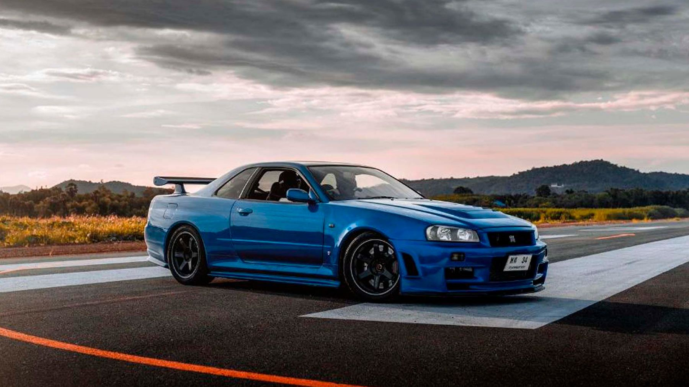
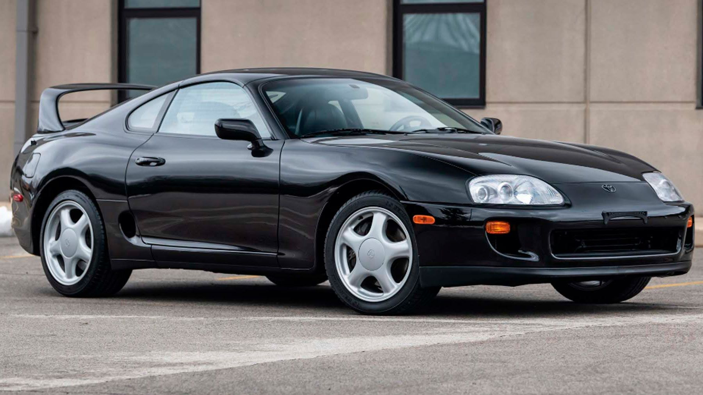
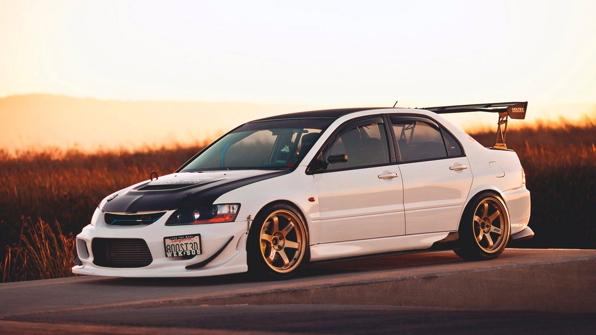
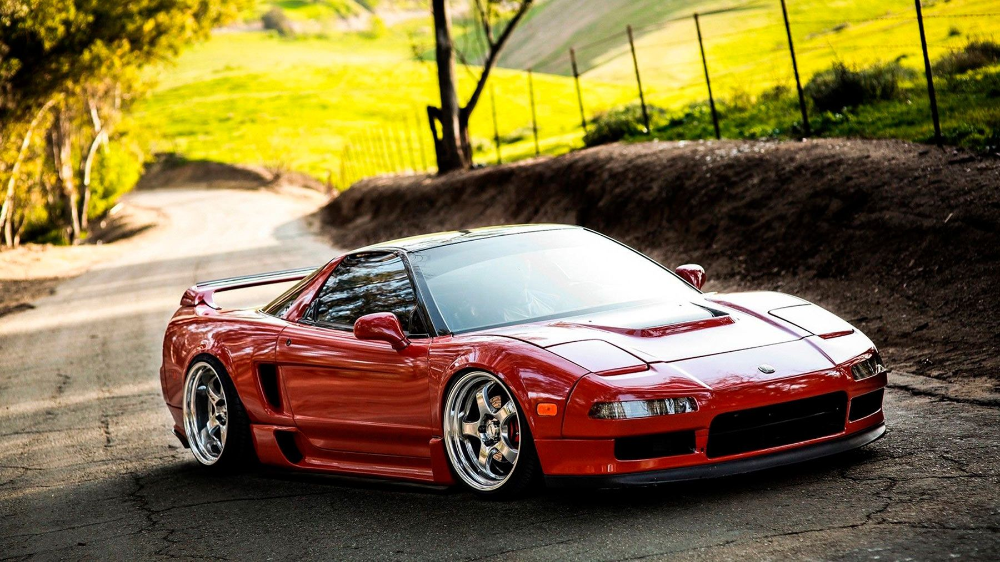
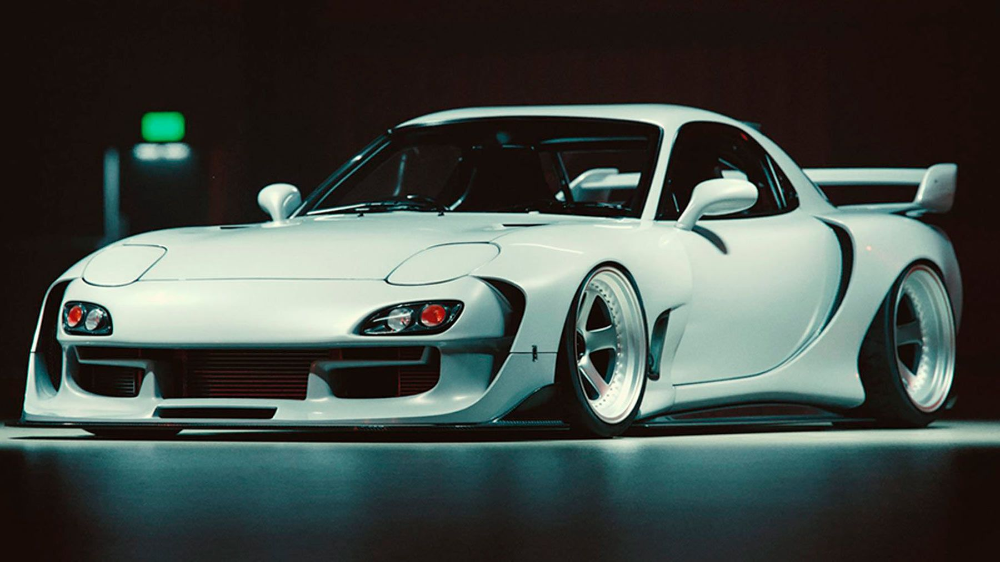

Первое поколение GT-R, известное как «Hakosuka» или «квадратный Skyline», производилось с 1969 по 1972. Он отличался 2.0-литровым рядным шестицилиндровым двигателем, предназначенным для гонок, с легким шасси и усовершенствованной подвеской. В свое время он был доминирующей силой в японском чемпионате по кузовным гонкам и сегодня остается очень востребованным предметом коллекционирования.
Второе поколение GT-R, известное как «Кенмери» или «длинноносый Skyline», производилось с 1972 по 1977. Он имел более крупный 2.6-литровый рядный шестицилиндровый двигатель и добился еще большего успеха в автоспорте, выиграв чемпионат Японии по кузовным гонкам четыре раза подряд.
Третье поколение GT-R, известное как «R32», производилось с 1989 по 1994 и, пожалуй, является самым известным из всех Skyline GT-R. Он отличался рядным шестицилиндровым двигателем с двойным турбонаддувом 2.6, полным приводом и передовой электроникой, что сделало его доминирующей силой как на улице, так и на гоночном треке. Он выиграл множество гонок и чемпионатов, в том числе Батерст 1000 в Австралии, и был популярным выбором среди тюнеров и энтузиастов по всему миру.
GT-R остается символом инженерного искусства и дизайна JDM, и его влияние на автомобильный мир будет ощущаться в будущих поколениях.
Интересные факты о Nissan Skyline GT-R
-
- Прозвище GT-R, «Годзилла», было придумано австралийской автомобильной прессой после того, как R32 GT-R доминировал в чемпионате Австралии по кузовным гонкам в начале 1990-х годов.
-
- Твин-турбо 3.8-литровый двигатель V6 GT-R собран вручную одним из пяти мастеров "Такуми" на моторном заводе Nissan в Иокогаме, Япония.
-
- Система полного привода GT-R, называемая ATTESA E-TS, использует ряд датчиков и компьютеров для постоянного мониторинга дорожных условий и соответствующей регулировки распределения крутящего момента, что делает ее одной из самых совершенных систем в своем роде.

Toyota Supra — один из самых знаковых японских спортивных автомобилей всех времен, известный своим элегантным дизайном, мощными характеристиками и исключительной управляемостью. Впервые представленная в 1978, Supra быстро завоевала репутацию высокопроизводительной машины благодаря мощному двигателю, спортивной подвеске и впечатляющему ускорению.
За прошедшие годы Supra стала культовой классикой среди автолюбителей, известной своей надежностью, стилем и производительностью.
Из всех моделей Supra лучшим считается Supra четвертого поколения, выпускавшаяся с 1993 по 2002. Эта модель оснащалась рядным шестицилиндровым двигателем объемом 3.0 с турбонаддувом, мощность которого составляла 320 лошадиных сил, что делает его одним из самых мощных автомобилей в своем классе.
Обладая элегантным дизайном, исключительными характеристиками и легендарной надежностью, Supra четвертого поколения является настоящей классикой, которая продолжает вдохновлять автолюбителей по всему миру.
Интересные факты о Тойоте Супра
-
- Знаменитая крыша Supra с двойным куполом была разработана для обеспечения дополнительного пространства над головой водителям в шлемах, поскольку Supra изначально разрабатывалась для гонок.
-
- Supra четвертого поколения (1993-2002) широко использовалась в первом фильме «Форсаж», которым управлял персонаж покойного актера Пола Уокера Брайан О'Коннер.
-
- Двигатель 2JZ-GTE Supra широко известен как один из самых легендарных двигателей всех времен.

Mitsubishi Lancer Evolution, также известный как «Evo», — это высокопроизводительный спортивный седан, ставший легендой в мире автомобилей JDM. Evo был впервые представлен в 1992 и быстро завоевал репутацию благодаря своей исключительной управляемости и производительности на трассе. Успех автомобиля на чемпионате мира по ралли только увеличил его популярность и укрепил статус одного из самых знаковых автомобилей JDM всех времен.
Одной из главных причин популярности Lancer Evolution являются его раллийные характеристики и управляемость. Автомобиль был разработан с учетом гонок и оснащен такими передовыми функциями, как полный привод, двигатель с турбонаддувом и сложная система подвески, обеспечивающая превосходное сцепление с дорогой и устойчивость.
Такое сочетание мощности и маневренности позволяет Evo с легкостью преодолевать даже самые сложные дороги и повороты, что делает его фаворитом среди любителей вождения.
Lancer Evolution также известен своим потенциалом индивидуальной настройки. От модернизации двигателя до обвесов — Evo предлагает широкий спектр опций послепродажного обслуживания, которые позволяют владельцам персонализировать свои автомобили по своему вкусу. Самая известная и востребованная модель Lancer Evolution – это Эво IX, который был создан с 2005 по 2007.
Evo IX оснащен мощным 2.0-литровым двигателем с турбонаддувом, модернизированной подвеской и агрессивным обвесом, который отличает его от предшественников. Его характеристики на трассе и резкий агрессивный стиль делают его незаменимым для любого автолюбителя JDM.
Интересные факты о Митсубиси Лансер Эволюшн
-
- Lancer Evolution имеет долгую историю участия в раллийных гонках, особенно в чемпионате мира по ралли (WRC). Успех Mitsubishi в WRC помог укрепить репутацию бренда как производителя высокопроизводительных спортивных автомобилей.
-
- Энтузиасты обычно называют Lancer Evolution «Evo». Это прозвище произошло от кода разработки автомобиля, который назывался «EVOlution».

Honda NSX, также известная как Акура НСХ в Северной Америке, является настоящей легендой JDM-сцены. Первоначально представленный в 1990, NSX был ответом Honda таким автомобилям, как Ferrari и Porsche, и быстро прославился своим новаторским дизайном и инженерными разработками. Что сделало NSX таким уникальным, так это использование в нем современных материалов, таких как алюминий и титан, которые сделали его невероятно легким, но в то же время прочным и жестким.
Это был первый серийный автомобиль с полностью алюминиевым несущим шасси и двигателем V6, расположенным посередине, который был одновременно мощным и экономичным. NSX также получил высокую оценку за исключительную управляемость и балансировку, отчасти благодаря инновационной системе подвески.
Но что делает Honda NSX такой потрясающей, так это ощущения от вождения. Двигатель представляет собой шедевр инженерной мысли и производит захватывающий звук выхлопа, не похожий ни на что другое на дороге. Управляемость очень острая, с идеальным балансом между недостаточной и избыточной поворачиваемостью, а тормоза одни из лучших в отрасли. И несмотря на свой спортивный характер, NSX — еще и удобный и практичный автомобиль с просторным салоном и приличным багажником. Это автомобиль, на котором можно ездить каждый день, но он по-прежнему обладает характеристиками и азартом настоящего суперкара.
Интересные факты о Honda NSX
-
- Первоначально NSX был представлен как концепт-кар на 1989 Чикагском автосалоне и вызвал такой ажиотаж, что компанию Honda завалили просьбами запустить его в производство.
-
- Первоначально NSX был доступен с безнаддувным двигателем V6 мощностью 270 л.с., что делало его одним из самых мощных автомобилей в своем классе на тот момент.
-
- NSX был спроектирован как практичный и удобный, с такими функциями, как электрические стеклоподъемники, кондиционер и аудиосистема премиум-класса, которые обычно не встречаются в высокопроизводительных спортивных автомобилях.

Mazda RX-7 – спортивный автомобиль, заслуживший репутацию одного из самых захватывающих и приятных в управлении автомобилей. Его популярность обусловлена уникальным роторным двигателем, который отличает его от других спортивных автомобилей. RX-7 всегда был автомобилем для водителя, с идеальным балансом управляемости, ускорения и торможения. Энтузиастов привлекает маневренность RX-7 и высокий обороты двигателя, которые делают впечатления от вождения непохожими ни на какие другие.
RX-7 третьего поколения, выпускавшийся с 1992 по 2002, является самой известной и уважаемой моделью автомобиля. Он отличался обтекаемым аэродинамическим кузовом, роторным двигателем с двойным турбонаддувом и задним приводом.
Управляемость RX-7 была одной из лучших в своем классе, а мощность двигателя была одновременно плавной и волнующей. RX-7 третьего поколения был технологическим чудом, обладавшим такими передовыми функциями, как последовательный турбонаддув и сложная система подвески.
Интересные факты о Mazda RX-7
-
- Третье поколение RX-7 (1991-2002) отличалось уникальным звуком выхлопной системы «вращающегося журчания», ставшим культовым звуком в мире спортивных автомобилей.
-
- RX-7 стал первым японским автомобилем, выигравшим престижную гонку на выносливость 24 "Часы Ле-Мана", одержав общую победу в 1991 на гоночном автомобиле 787B с роторным двигателем.